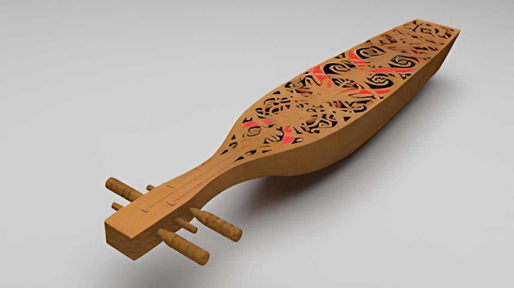
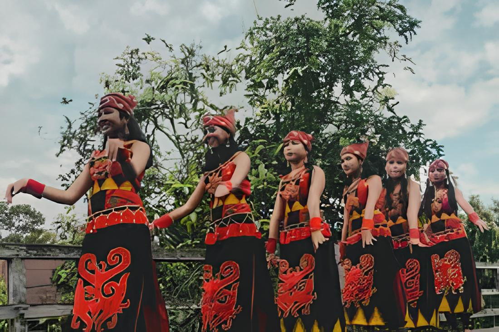

Asal Usul & Sejarah

Sape adalah alat musik tradisional khas suku Dayak di Kalimantan, khususnya Dayak Kayaan di wilayah Sungai Kapuas Hulu. Alat musik ini telah menjadi bagian yang tidak bisa dipisahkan dari budaya Dayak dan sering digunakan dalam berbagai upacara adat serta ritual.
Bahan dan Proses Pembuatan
Sape biasanya dibuat dari kayu adau, yang banyak ditemukan di Kalimantan. Kayu ini dipahat membentuk badan Sape dengan panjang sekitar satu meter atau lebih. Ciri khasnya adalah ukiran motif Dayak yang menghiasi permukaannya, memberikan nilai artistik dan estetika tinggi.
Struktur dan Jumlah Senar

Awalnya, sape memiliki dua atau tiga senar, namun seiring perkembangan zaman, jumlah senar bertambah menjadi empat hingga enam untuk menghasilkan variasi nada yang lebih kaya. Uniknya, sape menggunakan tangga nada pentatonik, yang terdiri dari lima nada dalam satu oktaf, berbeda dengan tangga nada diatonik pada musik Barat.
Teknik Permainan dan Fungsi Musik
Sape dimainkan dengan cara dipetik, mirip seperti gitar, namun teknik permainannya khas dan disebut "sapuan" yaitu teknik khas di mana jari-jari pemain menyapu senar dengan pola tertentu untuk menghasilkan alunan nada yang khas. Alunan musik sape sering digunakan sebagai pengiring tarian tradisional dan upacara adat, menciptakan suasana yang sakral dan khidmat.
Peran dalam Budaya Dayak

Dalam budaya Dayak, sape tidak hanya berfungsi sebagai alat musik, tetapi juga sebagai media ekspresi seni dan identitas budaya. Musik yang dihasilkan sape dipercaya mampu menjaga keseimbangan alam dan digunakan dalam ritual penyembuhan tradisional.
Adaptasi dalam Musik Modern
Menariknya, sape kini tidak hanya terbatas pada konteks tradisional. Banyak musisi muda yang menggabungkan suara khas sape dengan genre musik kontemporer, seperti jazz dan pop, sehingga memperkenalkan alat musik ini ke audiens yang lebih luas dan menjaga kelestariannya di era modern.
Demo Permainan Sape (Modern)
Sumber
Ada yang mau bertanya?
Atau mau tanya langsung ke Meta AI!
Sek, Tunggu bentar...
powered by Llama-3 8B